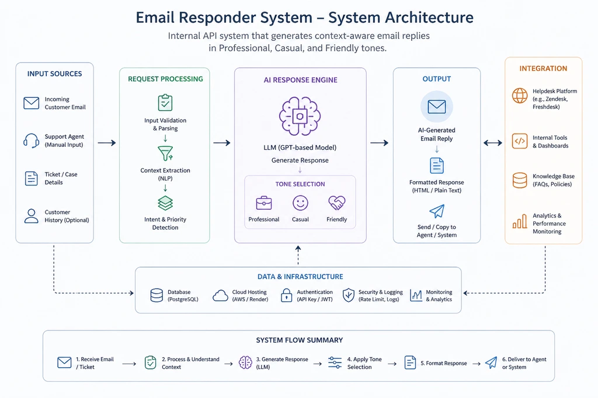
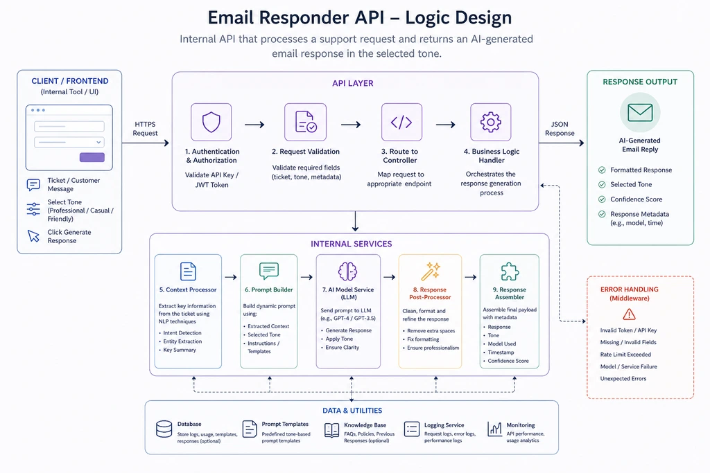
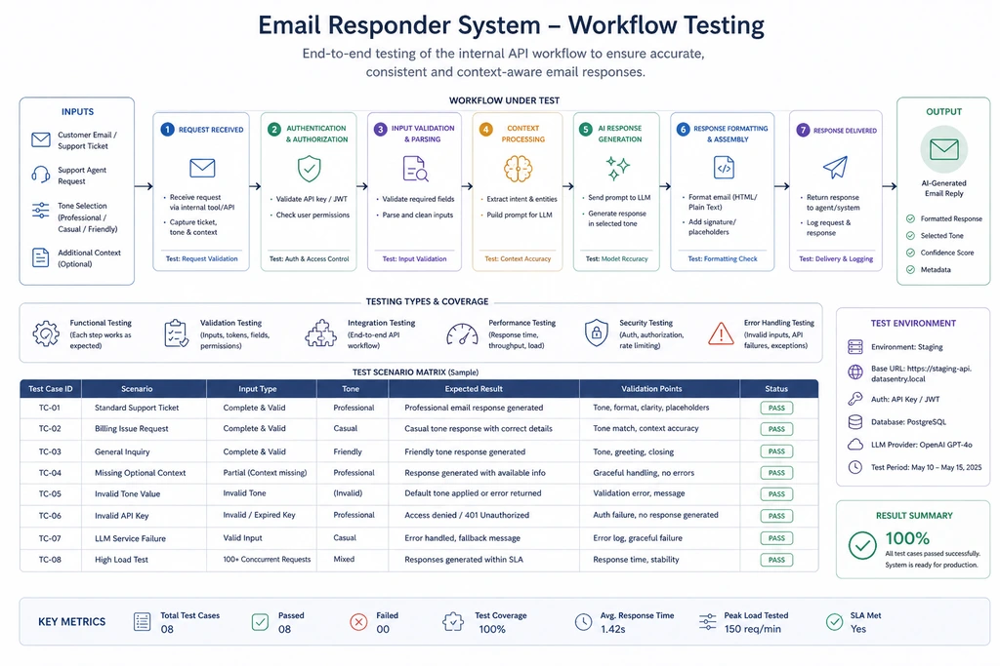
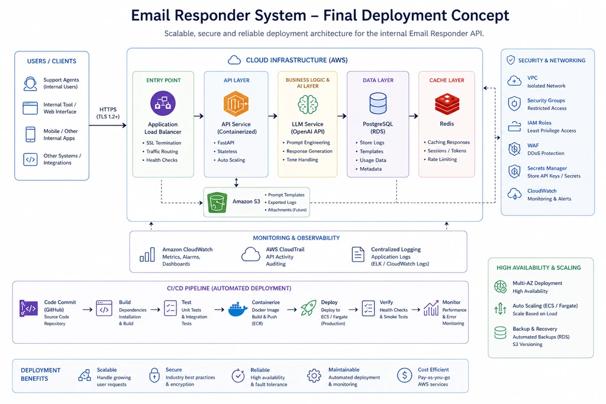

Email Response Automation System
An internal API-driven communication tool developed for DataSentry MSP to automate customer email responses using multiple response tones and workflow logic.
AI Email Response Automation System
Designed and implemented an internal API solution for DataSentry MSP that generates customer support email responses in professional, casual, or friendly tones, improving consistency, reducing response time, and streamlining communication workflows.
Project Overview
This project was developed during my internship at DataSentry MSP to improve customer support communication. The system automatically generates email responses using predefined tone selections such as professional, casual, or friendly. The goal was to reduce repetitive manual writing while maintaining consistent communication quality.
The Challenge
Customer support teams often spend significant time drafting repetitive responses for similar inquiries. Maintaining tone consistency across multiple team members was difficult, and response times could become slow during high-ticket periods.
Our Approach
I designed an internal API workflow that accepts customer query input and dynamically generates suitable email responses based on selected tone preferences. The system was structured to support efficient communication while reducing repetitive tasks for the support team.
Impact & Results
The automation system significantly improved communication efficiency by reducing repetitive drafting work and creating standardized customer interactions.
Technology Stack
Development Workflow




Key Features
The email responder system was designed to improve communication efficiency by automating customer replies while keeping responses natural, professional, and adaptable. It allows support teams to save time, maintain brand consistency, and handle inquiries with greater speed and accuracy.
Dynamic Response Tone Selection
Generated email replies in professional, casual, and friendly communication styles.
Internal API Integration
Designed to integrate directly into support workflows for quick response generation.
Workflow Optimization
Reduced repetitive manual writing while maintaining communication consistency.